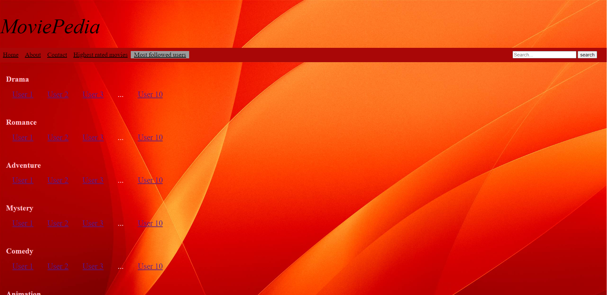

In the main page of MoviePedia the users have the option to see the most followed users of our application.
They can do that by clicking on the "Most followed users" tab.

There they can find the most followed useres categorised by the movie genre they like most.
